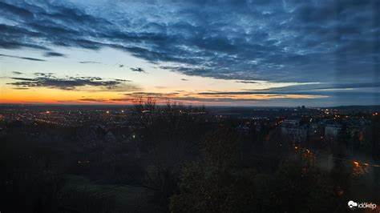

Miskolc
- December 19., csütörtök: A nap borongósan indul, de délutánra fokozatosan felszakadozik a felhőzet, és helyenként napsütésre is számíthatunk. A nappali hőmérséklet 5°C körül alakul, éjszaka pedig 2°C-ra csökken. Csapadék nem várható, de reggel köd nehezítheti a közlekedést.
- December 20., péntek: Pénteken borongós és csapadékos időre kell készülni. Reggel és délután is várható eső, amely helyenként intenzívebb lehet. A nappali hőmérséklet 6°C körül mozog, estére viszont 1°C-ra hűlhet le. A szél élénk lehet, különösen a délutáni órákban.
- December 21., szombat: Szombaton többnyire napos idő várható, bár helyenként még maradhatnak felhős területek. Az eső esélye alacsony, szárazabb napra számíthatunk. A nappali hőmérséklet 5°C körül lesz, éjszaka pedig -1°C-ra csökkenhet, így reggel fagyra kell készülni.
- December 22., vasárnap: Vasárnap ismét borult idő lesz jellemző, és kisebb eső is előfordulhat, különösen a délutáni órákban. A nappali hőmérséklet 4°C körül alakul, éjszaka 0°C-ra csökkenhet a hőmérséklet. Párás, hűvös idő várható.
- December 23., hétfő: Hétfőn folytatódik a borongós idő, de eső nem valószínű. A nappali hőmérséklet 3°C körül alakul, míg éjszaka 1°C-ra csökkenhet a hőmérséklet. Hideg, de csapadékmentes napra lehet számítani.
- December 24., kedd: Karácsony előestéjén felhős, párás idő várható. Eső nem valószínű, de a reggeli órákban köd képződhet. A nappali hőmérséklet 4°C körül alakul, éjszaka pedig 2°C-ra csökkenhet.
- December 25., szerda: Karácsonykor részben napos időre számíthatunk, de a felhők időnként visszatérhetnek. Az eső esélye minimális, a nappali hőmérséklet 5°C körül lesz, míg éjszaka 3°C-ra csökkenhet a hőmérséklet. Nyugodt, enyhe téli nap várható.
